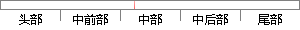

针对这三个用户，本系统应该分别为其提供对应的功能服务。
片段位置图

相似结果|
相似片段 1：数据引进数据集成、集中存放，通过统一的可靠性、安全性等方面的设计为用户提供稳定、可信的数据服务；针对本系统的不同使用者，提供对应的账号、权限管理，同时提供统一的用户管理、身份认证、安全保障服务，建立
|
※ 片段修改建议 ※
近似词参考：- 应该：应当
- 提供：供给 供应
- 功能：功效
- 服务：办事
系统自动生成语句：针对这三个用户，本系统应当分别为其供给对应的功效办事。
注：本片段修改建议为系统自动生成，仅供参考。